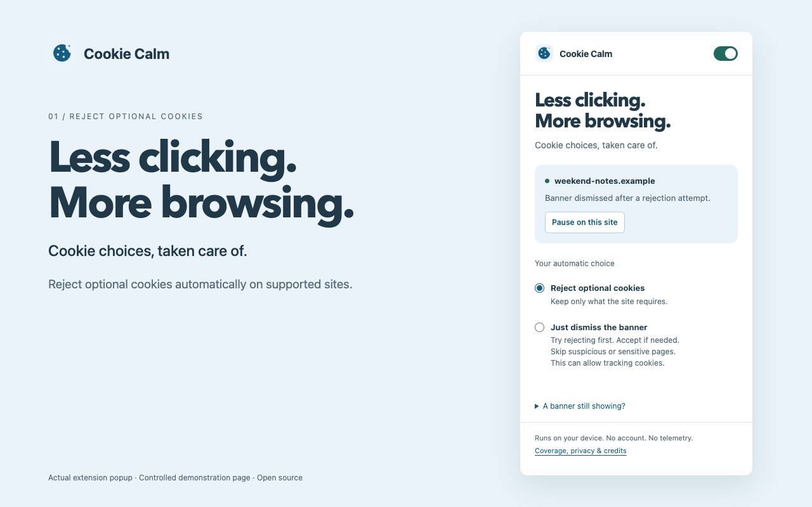

Less clicking.
More browsing.
Cookie Calm rejects optional cookies and automatically dismisses supported promotional popups.
Download for ChromeInstallation instructionsVersion 1.1.2 adds Sourcepoint US opt-out support, including the privacy manager reported on Futurism. Install the latest unpacked release through GitHub. Chrome Web Store updates undergo separate review.

Fewer interruptions.
Supported newsletter, donation, subscription, offer, optional registration, app, notification, and chat prompts close or minimize automatically. The Guardian support panel collapses through its own control.
Cookie Calm uses bundled rules and consent controls to reject optional cookies. You can pause any site, or enable an acceptance fallback when rejection is unavailable.
Clear scam signals stop automatic clicks. Sensitive forms and other warning signals block acceptance. These local checks can miss threats and are not a phishing detector.
Runs on your device.
The extension processes page text, addresses, and controls locally. Interaction events help preserve active forms. Typed values are not recorded. It stores your preferences and temporary tab status. There are no accounts, analytics, telemetry, or remote rules. Read the privacy policy for details.
Open source, built on open source.
Cookie Calm includes MIT-licensed rules and interpreter code from Consent-O-Matic. It adds its own controls, scheduling, and conservative click guards. It is an independent project, not an official version of Consent-O-Matic.
Some prompts remain unsupported. Paid-only content still requires access. Chrome permission prompts are separate from in-page requests. A dismissed banner does not prove that a website honors your consent choice.